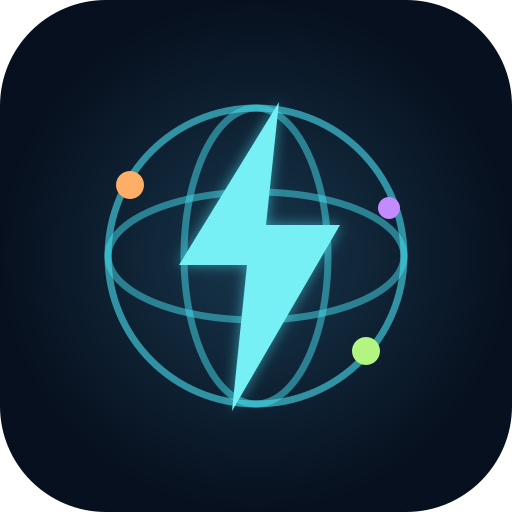

— микросекунды
Полное излучение Солнца во все стороны содержит за это время столько же энергии, сколько мировая электрогенерация за год.

Энергия мираИНФРАСТРУКТУРА · ЗЕМЛЯ · КОСМОССтолько энергии Земля перехватывает от Солнца примерно за 11 минут — столько же человечество выработало электричества за весь 2025 год.
Логарифмическая шкала: равный шаг означает одинаковый множитель.
Полное излучение Солнца во все стороны содержит за это время столько же энергии, сколько мировая электрогенерация за год.
Здесь учтён поток у верхней границы атмосферы, до отражения и потерь. Сравнение энергий не означает, что весь этот свет можно собрать и превратить в электричество.
Расчёт: Ember · NASA · номинальные константы IAU. ГВт и ТВт — мощность; ТВт·ч — энергия за период.
Сравнивайте отдельно выработку, ЦОД, энергоблоки и 5G. Общий индекс — прозрачный расчёт атласа.
| Место | Страна | ТВт·ч | Период |
|---|
Четыре составляющие по 25%: выработка за 2025 год, ЦОД открытого каталога, действующие атомные блоки и охват 5G за 2025 год. Первые три переводятся на шкалу 0–100 по формуле 100 × ln(1 + значение) / ln(1 + максимум). Для 5G используется процент охвата.
Индекс равен среднему четырёх составляющих. Включаются только страны со всеми четырьмя значениями; отсутствие данных не считается нулём. Нули блоков АЭС — подтверждённое отсутствие в полной таблице PRIS. Логарифм смягчает разницу между крупными и малыми странами.
Это исследовательский индекс атласа, не официальный рейтинг развития. Он зависит от полноты открытого каталога ЦОД и не оценивает качество связи, надёжность энергосистемы или мощности дата-центров.
Опубликованные прогнозы с датами. Число объектов, мощность и годовая энергия показаны раздельно.
Низкий и высокий сценарии МАГАТЭ. ГВт — мощность; этот график не прогнозирует число энергоблоков.
МАГАТЭ · сентябрь 2026 ↗Настройка мониторинга…
Проверяем доступность…
На iPhone и iPad откройте атлас с экрана «Домой», затем нажмите «Включить уведомления» и разрешите их в системном окне. Это нужно сделать на каждом устройстве.
Пополнение каталога не обязательно означает строительство новых ЦОД. В сообщении указываются источник, период и возможное изменение методики.
Что уже произошло — и что пока существует как проект. Космические планы не включены в земные энергетические итоги.
Солнечный свет нужно собрать, преобразовать и передать. Вычислительные аппараты требуют радиационной защиты и отвода тепла через излучатели; добавляются стоимость запуска и ограничения связи.
Спутниковая связь NTN расширяет доступность сети. Это отдельная архитектура, а не автоматическое превращение всей планеты в зону наземного 5G.
3GPP · NTN, Release 17 ↗